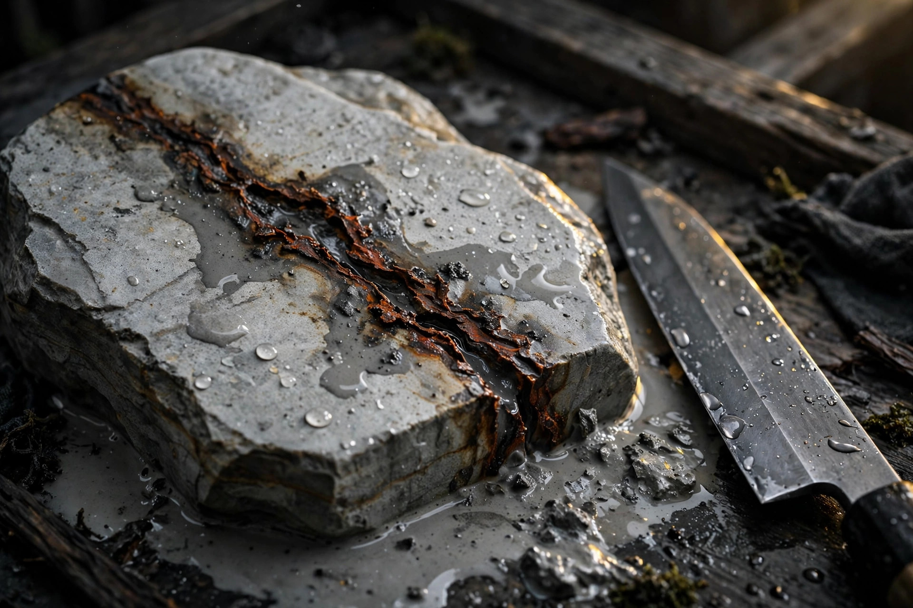

What Is Dokusuji? How to Spot a "Toxic Vein" — and What to Check Before You Buy

Dokusuji — literally a "toxic vein" — is a vein of hard foreign material, such as iron-rich minerals, mixed into a natural whetstone. Every time you sharpen, it can scratch the edge or cause a catch. There are visual traits that make it more likely, but many cases only become clear once you actually sharpen, so checking "has this stone been tested?" and "can it be returned or exchanged?" before buying is the shortest route to avoiding a mistake.
What a toxic vein is — why it damages an edge
Natural whetstones are cut from strata laid down over a long time. During that process, material harder than the stone itself — iron-rich minerals, quartz-like grains, and similar — can enter in vein form. That is dokusuji. The stone itself is meant to polish an edge smoothly, but the vein alone is abnormally hard, so every time the edge passes over it, it catches with a grating feel and can chip the edge or leave a deep scratch.
Not every vein is toxic. A vein that is only coloured, and soft, often has no effect on sharpening. The problem is a vein that is clearly hard to the touch and changes how the edge bites. Telling the two apart is part of what makes choosing a natural stone difficult.
Visual traits that make it more likely
Warning signs to watch for (as a guide only)
- A dark-coloured vein: a brown or blackish line crossing the sharpening surface.
- A line with a different sheen: when wet, only that part looks glossy.
- A difference you can feel: running a wet finger over it, you feel roughness or a step.
- A metallic look: glittering grains lined up in vein form.
These are only a guide. The reverse also happens: a stone that looks calm can catch when sharpened, and a stone with a showy vein can sharpen without trouble. Do not conclude "a vein means a bad stone" outright — judge with the limits described next in mind.
Why many cases only become clear once you actually sharpen
The awkward thing about a toxic vein is that it can hide inside the stone rather than on its surface. A stone may seem fine at first, then a vein emerges from a lower layer as sharpening wears the stone down. A vein can also be inconspicuous when dry and only reveal itself as a catch once the stone is wet and slurry is flowing.
So there is a limit to checking by looking at a photo or at the stone itself. What can be trusted is whether there is a record of the stone actually having been tested with a blade. Whether the seller publishes test results is an important measure of a shop.
What to check before you buy — a checklist
| Check | What to look for (guide) |
|---|---|
| Tested-stone labelling | Is there a statement that the stone was actually sharpened and checked, or a record of how it felt to sharpen? |
| Whether dokusuji is stated | Is it stated as present, absent, or unconfirmed — and, if unconfirmed, is that stated honestly? |
| Return / exchange terms | What is covered, and until when, if a problem appears after sharpening? (Check before buying, as a guide.) |
| State of the photos | Is there a photo of the sharpening surface when wet? A dry photo alone gives little to judge by. |
| Ease of consultation | Is there a contact point where you can describe the blade you will sharpen and ask advice? |
Buying on low price alone can leave you holding a stone you cannot use. Especially for a first finishing stone, buy from someone who sells tested stones and can be consulted if a problem arises.
Where to look next
- Stone database — check each stone together with its hardness and grit range. It is currently a preview with sample records, not live inventory.
- Appraised stones — stones that have actually been sharpened and tested, as described in the Japanese article.
- Enquiries — ask before buying whether a stone suits the blade you want to sharpen. Write to us at naoren.38@gmail.com, or use the contact form.
Frequently asked questions
- Is a stone with a toxic vein completely unusable?
- It depends on the vein's position and depth. If it only appears small at the edge of the sharpening surface, you may be able to use the stone while avoiding that part. But a stone with a hard vein across the area the edge touches is best avoided as a finishing stone.
- Can you tell a toxic vein from a photo alone?
- A dark vein or a line with a different sheen can be a guide in a photo, but there are many cases where appearance alone does not tell and the catch only becomes clear on first sharpening. A photo alone cannot settle it.
- If a toxic vein appears, can you grind it away?
- A shallow vein on the surface alone can sometimes be removed by flattening. But if the vein runs into the interior of the stone, the same vein can emerge from below even after grinding.
- What should you do if you find a toxic vein after buying?
- First tell the shop, in concrete terms, what happened when you sharpened (catching, edge damage). Whether return or exchange is possible differs by shop, so checking the terms before buying matters.